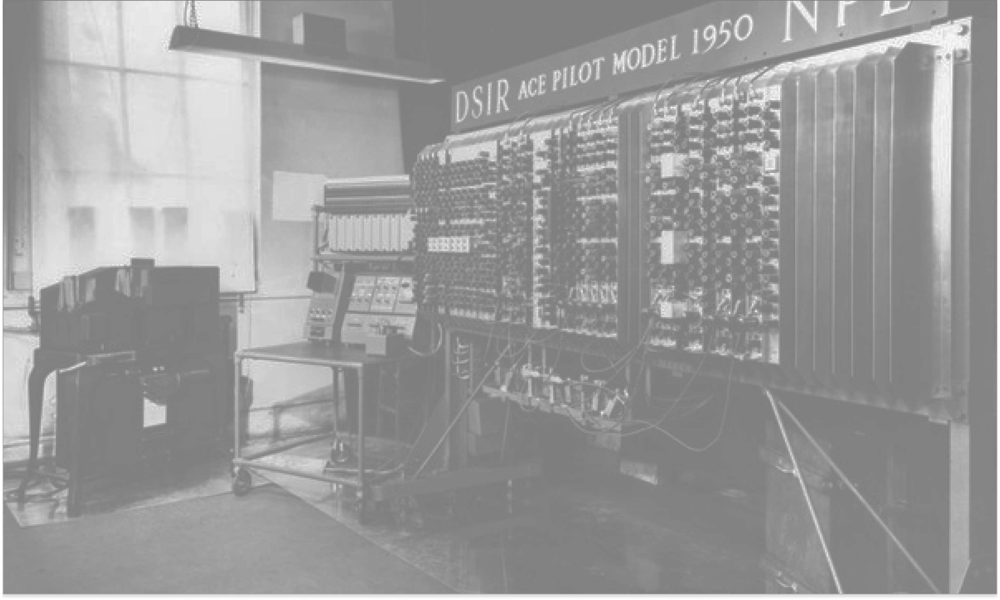
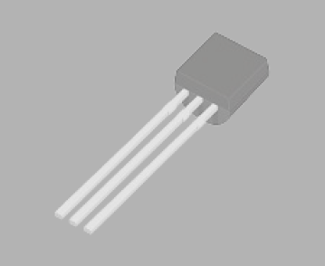
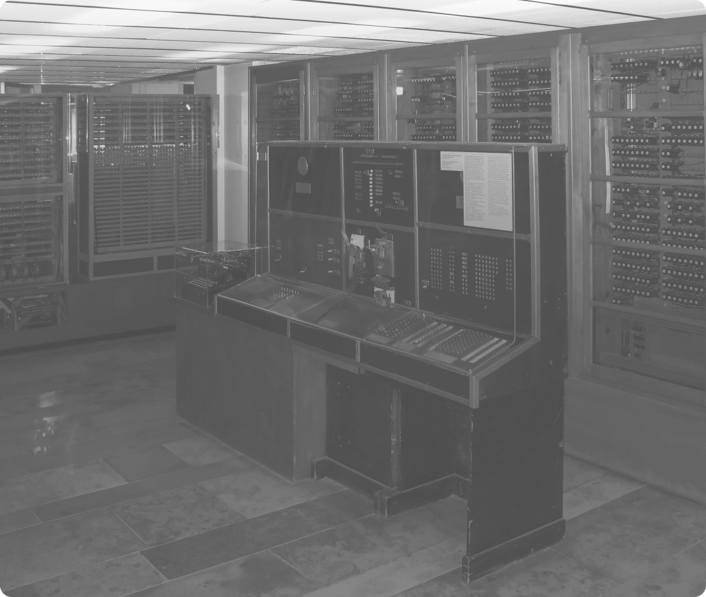
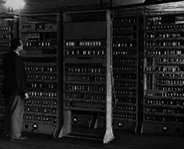
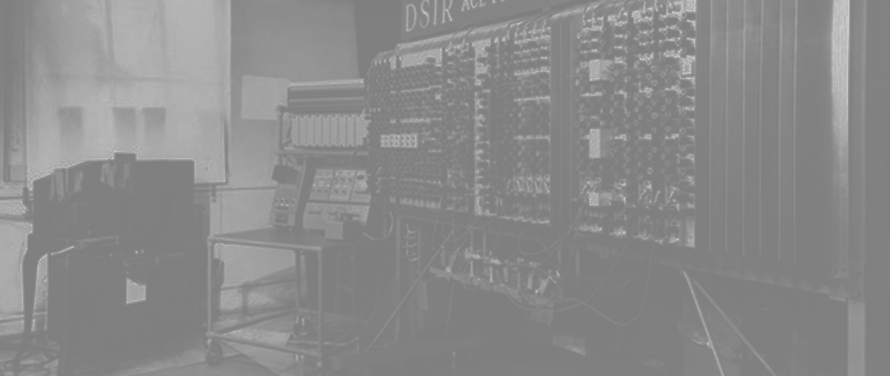
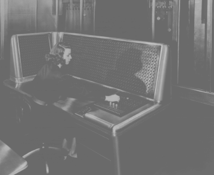
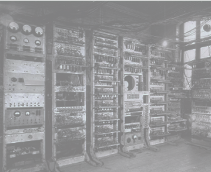
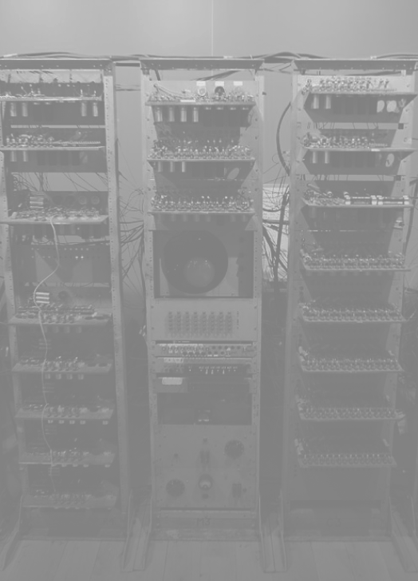

Quando a computação passa de experiências
isoladas para ciência organizada e máquinas
mais potentes.

Inventado por John Bardeen, William
Shockley e Walter Brattain, o transistor
substituiu as válvulas eletrônicas.

O Z4 foi a evolução direta do Z3,
desenvolvido por Zuse. Tornou-se um dos
primeiros computadores disponíveis
comercialmente.

O EDSAC foi o primeiro computador prático
de programa armazenado.

Baseado nos projetos de Alan Turing, o Pilot ACE foi construído no Reino Unido e tornou-se um dos
primeiros computadores de programa armazenado do país.
Fundada em 1947 nos Estados Unidos, a
ACM é uma organização global sem fins
lucrativos que conecta acadêmicos,
pesquisadores, educadores e profissionais da indústria para dialogar, compartilhar
recursos e abordar os desafios do campo.

Foi uma máquina de computação
histórica construída pela IBM e
inaugurada em 1948, representando um
marco importante na transição da
computação eletromecânica para a
eletrônica.

O Manchester Mark I, evolução do “Baby”,
foi um dos primeiros computadores de
programa armazenado usados em larga
escala.

Conhecido como “Baby”, o Manchester Small-Scale
Experimental Machine foi o primeiro computador a executar
um programa armazenado na memória. Esse feito marcou o
nascimento do modelo de computação moderna.
John von Neumann foi um matemático húngaro-americano
com uma mente prodigiosa, cujas contribuições abrangem a
matemática, a física quântica, a economia e, crucialmente, a
Ciência da Computação